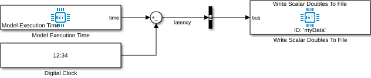

Create and Deploy a Model
Before starting, make sure you have installed the Generic Target toolbox and prepared the target computer. The toolbox ships with a pre-configured Simulink template model that should be used as the basis for every new application: it already contains all model settings required for correct code export. Open MATLAB and run GT.GetTemplate to generate the template in the current working directory. The default base sample time of the model is 0.01 seconds and can be adjusted as needed. The stop time of the simulation is irrelevant, because the deployed application runs indefinitely.
Evaluating the Target Latency
The template model contains a simple test to evaluate the scheduling latency. It subtracts the expected simulation time, provided by a digital clock, from the model execution time, which is the measured elapsed time since the model start. The resulting difference is recorded and written to a file.

Perform this test once for each target to verify that the desired sample rate can be maintained. In the ideal case the difference is zero; in practice, values in the microsecond range are typical. If the base sample time is chosen too small, the real-time kernel may no longer be able to maintain it on the given target hardware.
Build the Model and Deploy to Hardware
Source code is generated from the Simulink model and deployed to the target with the GT.GenericTarget class of the MATLAB package. Writing a small MATLAB script for the deployment process is recommended. A minimal script looks like this:
username = 'user'; % Set username of target pc address = '192.168.0.100'; % Set address of target pc model = 'GenericTargetTemplate'; % Name of the Simulink model that is to be deployed target = GT.GenericTarget(username, address); target.Deploy(model);
Start and Stop the Application
Once the model has been deployed successfully, start the application with target.Start() and stop
it with target.Stop(). If the application should run on specific CPU cores, set the
targetBitmaskCPUCores property of the target
object before calling
Start. For example, to pin the application to cores 0 to 5,
set target.targetBitmaskCPUCores = '0x3f';.
To stop the application from within the model — for example based on a runtime condition — use the Stop Execution block from the Simulink library.
Download Data
Once the application has been stopped, download the recorded data with
target.DownloadDataDirectory(). You are asked which recording directory to download; the directory
names correspond to the UTC time of the application start. The downloaded data is read and decoded with
GT.DecodeDataDirectory. The binary file format of the
recordings is documented here.